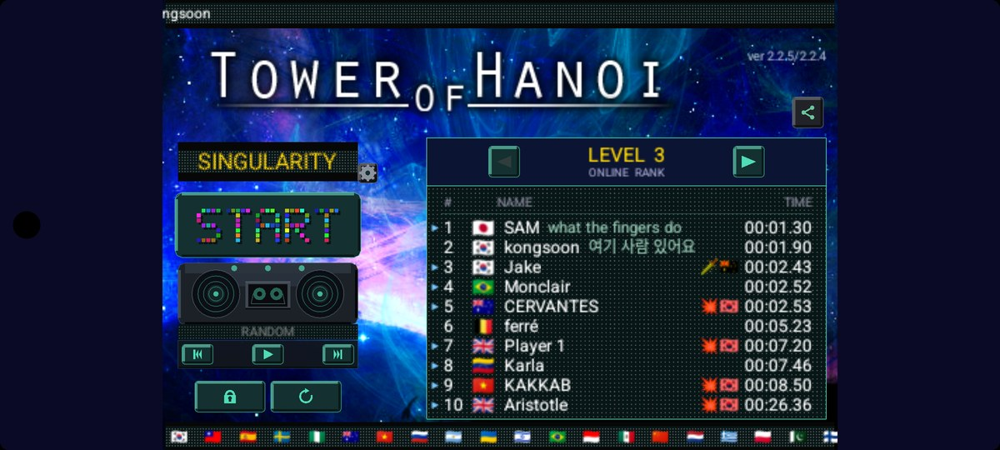
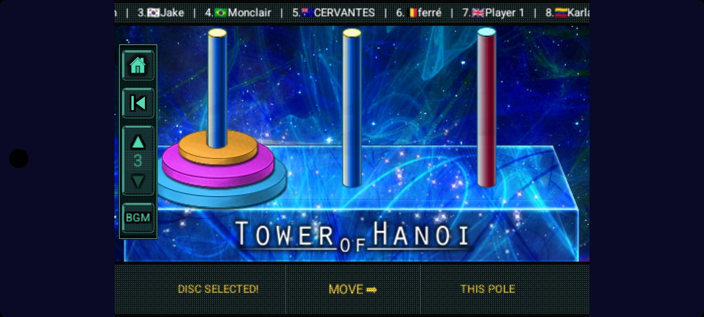

하노이 탑 스피드런
고전 퍼즐 하노이 탑 게임을 세계 랭킹이 있는 스피드런으로!
시간과 싸우고, 세계 랭킹에 오르고, 상위 랭커의 고스트에 도전하세요.
설치 없이 브라우저에서 무료로 체험해 보세요
하노이 탑 게임 규칙
- 세 개의 기둥 중 한 기둥에 크기순으로 쌓인 원판을 모두 다른 기둥으로 옮깁니다.
- 한 번에 원판 하나만 옮길 수 있습니다.
- 작은 원판 위에 큰 원판을 올릴 수 없습니다.
단순한 퍼즐이 아니라, 속도 경쟁
세계 랭킹
레벨별로 전 세계 플레이어와 경쟁하세요. 1밀리초가 순위를 바꿉니다.
고스트 레이스 & 복수전
상위 랭커의 기록과 나란히 달리고, 지면 복수전으로 다시 도전하세요.
스피드런 타이머
밀리초 단위 기록과 실시간 RPM 미터로 빠르고 깔끔한 풀이를 평가합니다.
리플레이
내 최고 기록을 다시 보거나, 랭커의 플레이를 관전하며 최단 경로를 배워 보세요.
국기로 응원
랭킹 보드에서 우리나라 국기를 달고 세계 무대에서 내 순위를 확인하세요.
8비트 BGM
칩튠 음악 플레이어가 탑을 오르는 리듬을 만들어 줍니다.
네온빛 속도감



자주 묻는 질문
하노이 탑 게임 규칙이 뭔가요?
한 번에 하나의 원판만 옮길 수 있고, 작은 원판 위에 큰 원판을 올릴 수 없습니다. 모든 원판을 빨간 기둥으로 옮기면 성공입니다.
컴퓨터 브라우저에서 하노이 탑을 플레이할 수 있나요?
네. 웹에서 플레이에서 설치 없이 무료로 체험할 수 있습니다. 웹에서는 레벨 3, 4를 플레이할 수 있고, 전체 게임은 iOS·Android 앱에서 즐길 수 있습니다.
온라인 랭킹에는 어떻게 오르나요?
아무 레벨에서나 개인 최고 기록을 세우면 자동으로 등록됩니다. 랭킹 보드를 눌러 레벨별 세계 순위를 확인하세요.
고스트 레이스가 뭔가요?
상위 랭커의 기록 플레이와 나란히 달리는 대결입니다. 이기면 내 이름을 남기고, 지면 복수전으로 다시 도전할 수 있습니다.
웹 기록도 세계 랭킹에 반영되나요?
아니요. 웹 플레이는 연습용으로, 실시간 세계 랭킹과 비교만 해 줍니다. 앱에서 플레이한 기록만 랭킹에 등록됩니다.
무료 게임인가요?
네, 무료입니다. 일부 높은 레벨은 선택적인 인앱 결제로 열 수 있습니다.